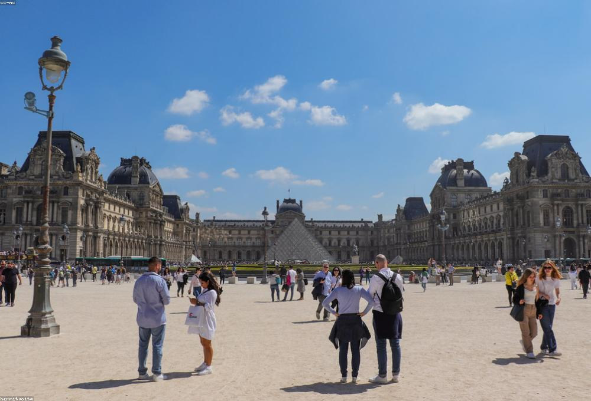

À la une · SommetConférence inaugurale de Democracy Together
Deux jours de débats entre think tanks d'Afrique et d'Europe, de tables rondes publiques et d'ateliers de travail. Ouverture par les membres fondateurs, restitution du Baromètre annuel et signature de la charte du réseau.
Dates
12 et 13 nov. 2026
Lieu
Paris, France
Langues
FR / EN
Accès
Sur inscription